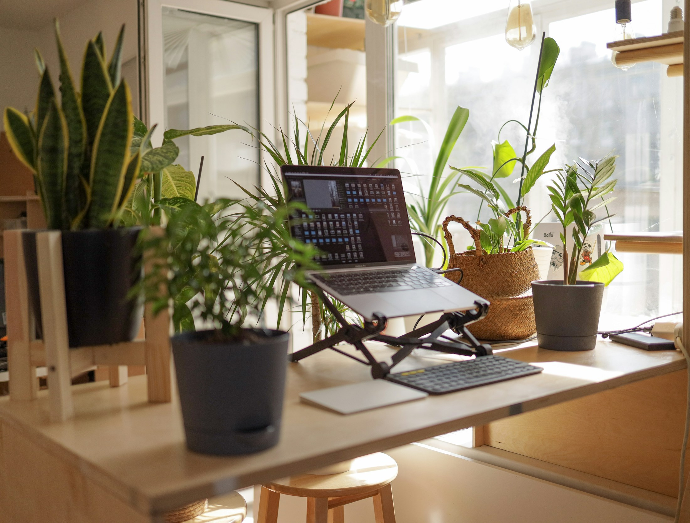
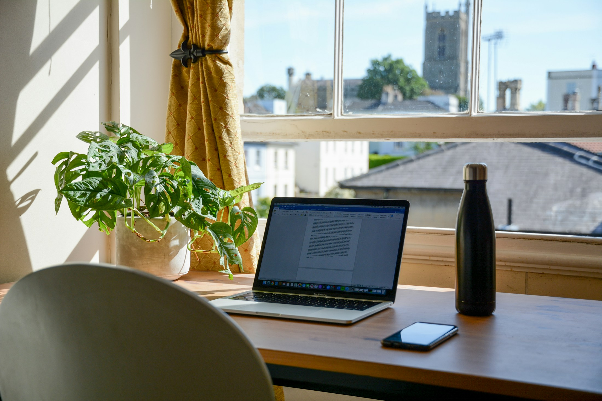

TL;DR
Working from home can be effective with the right tools. Key software includes Zoom for communication, Trello for project management, Slack for team collaboration, and tools like Notion for knowledge management. Implement these tools for optimal workflow.
Who this is for
This guide is tailored for remote workers, freelancers, and managers overseeing teams who work from home. Whether you are new to remote work or looking to optimize your home office setup, these tools can enhance productivity and collaboration.
Key ideas
1. **Communication**: Clear communication tools are vital. Zoom and Slack lead in facilitating real-time discussions.
2. **Project Management**: Trello and Asana allow for effective task management and progress tracking. They help teams stay aligned on goals.
3. **Collaboration**: Shared platforms like Notion and Google Workspace foster teamwork and knowledge sharing.
4. **Time Management**: Tools like Toggl and Clockify assist in tracking time and ensuring productive work hours.
5. **File Sharing**: Google Drive and Dropbox excel in providing secure file storage and sharing capabilities.

Step-by-step guide
1. **Set Up Communication**: Choose Zoom for video calls. Install and familiarize yourself with its features like screen sharing and recording meetings.
2. **Choose a Project Management Tool**: Opt for Trello. Create boards for each project and add cards for tasks. Set deadlines and assign members.
3. **Utilize Collaboration Platforms**: Implement Notion for document management. Create databases for notes, tasks, and team wikis.
4. **Implement Time Management Solutions**: Use Toggl to track work hours. Set up projects and log your time, reviewing weekly for efficiency.
5. **Organize File Sharing**: Create a Google Drive account. Organize your files into folders and set sharing permissions for team access.
Common mistakes
1. **Neglecting Communication**: Failing to communicate effectively can lead to misunderstandings.
2. **Overlooking Project Management**: Not using a dedicated tool can result in missed deadlines.

3. **Ignoring Time Tracking**: Not monitoring work hours can lead to burnout or inefficient work habits.
4. **Poor File Organization**: Disorganized file storage can restrict collaboration and data accessibility.
5. **Lack of Team Engagement**: Not utilizing collaborative tools can make remote work feel isolating.
Checklist
- ✅ Set up a reliable internet connection.
- ✅ Choose and familiarize yourself with communication tools (Zoom, Slack).
- ✅ Implement project management software (Trello, Asana).
- ✅ Use time management tools (Toggl, Clockify).
- ✅ Organize your files in cloud storage (Google Drive, Dropbox).
- ✅ Ensure regular team updates and check-ins.
- ✅ Create a conducive workspace free of distractions.
FAQ
Q: What is the best video conferencing tool for large teams?
A: Zoom is highly recommended for its ability to host large meetings and feature robust integrations.
Q: How can I keep my team motivated while working remotely?
A: Regular check-ins, virtual team-building activities, and open communication channels can enhance motivation.
Q: Are there any cost-effective tools for freelancers?
A: Tools like Trello and Slack offer free versions suitable for freelancers to manage tasks and communicate effectively.
Q: How often should I track my work time?
A: Daily tracking helps you understand your productivity patterns and adjust your workflows accordingly.
Q: What’s the best way to organize my digital files?
A: Establish a clear folder structure in your cloud storage and label files consistently for easy retrieval.
Photo credits
- Photo 1: Tekton on Unsplash (https://unsplash.com/@tekton_tools) (https://unsplash.com/photos/black-and-red-tool-box-EcE9dFfXwwE)
- Photo 2: vadim kaipov on Unsplash (https://unsplash.com/@vadimkaipov) (https://unsplash.com/photos/black-laptop-computer-on-brown-wooden-table-_6kI0qhmxc4)
- Photo 3: Mikey Harris on Unsplash (https://unsplash.com/@mikeyharris) (https://unsplash.com/photos/macbook-pro-on-brown-wooden-table-kw0z6RyvC0s)
- Photo 4: Efe Kurnaz on Unsplash (https://unsplash.com/@efekurnaz) (https://unsplash.com/photos/photo-of-macbook-pro-frying-pan-with-eggs-and-bread-on-gray-mat-VsQWu6ckfjk)